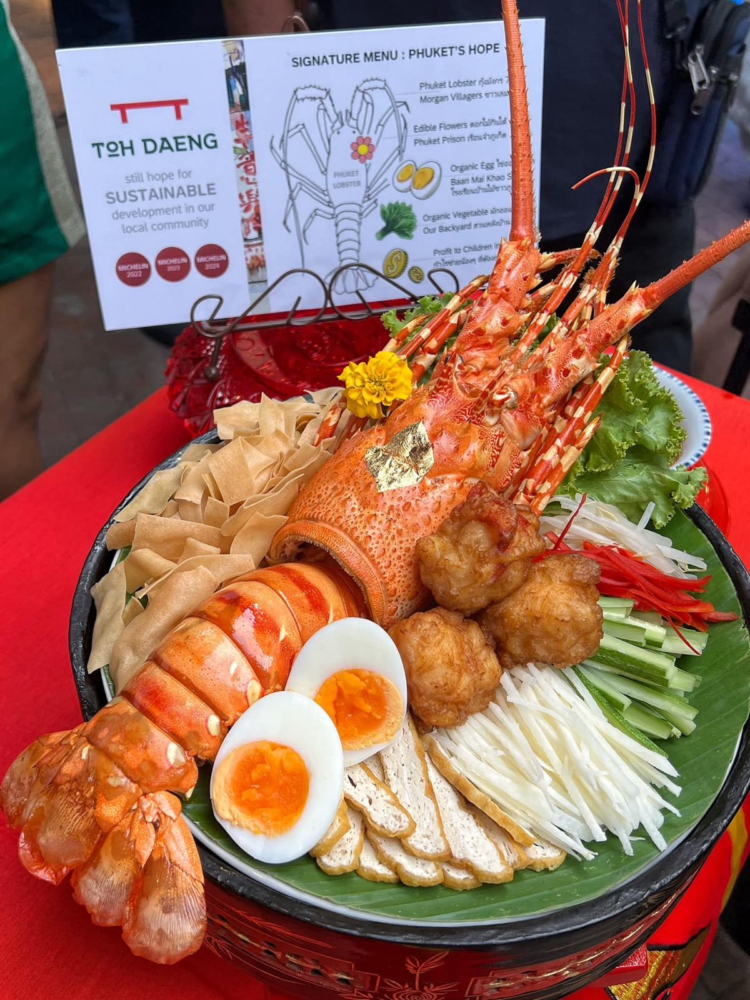
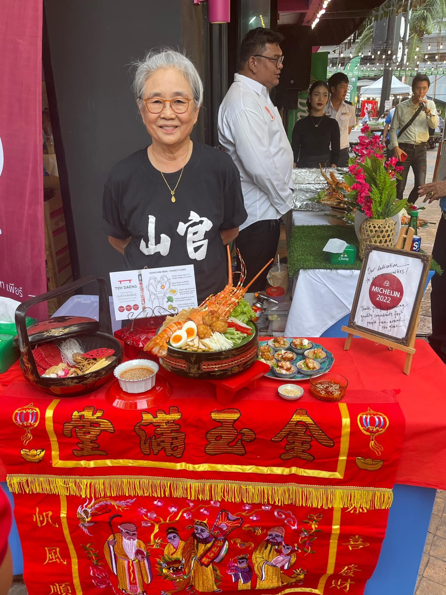
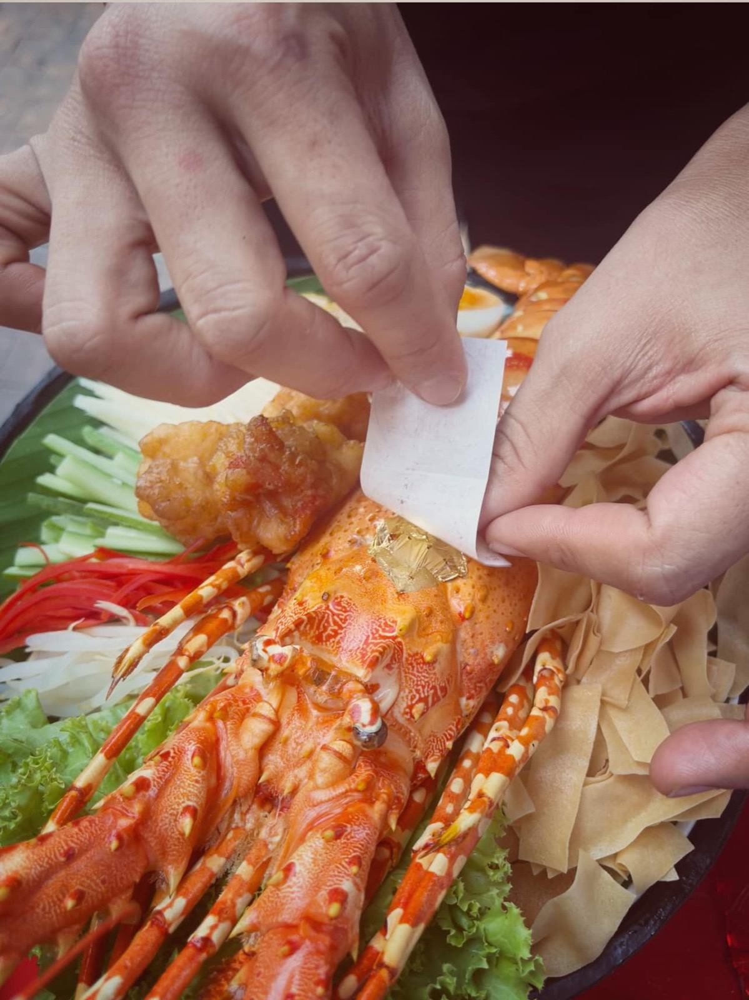

2567 · รางวัล · เหตุการณ์
ร้านโต๊ะแดงร่วม Phuket Lobster Festival 2024 ด้วยเมนูฮูแช้กุ้งมังกร



ขอบคุณทุกภาคส่วนที่ร่วมกันจัดงานดีๆ Phuket Lobster Festival 2024 เจอกันที่ร้าน Toh Daeng - โต๊ะแดง แอทบ้านอาจ้อ ยาวๆ ถึงสิ้นเดือน 8/2024 น้า 😇❤️
เตรียมตัวล่วงหน้ามาเป็นเดือน แต่ก้อยังตื่นเต้นอยู่ดี ว่าปีนี้จะคิดนำเหนอเมนูแบบไหนดี ช่วงก่อนหน้านี้ #ไหลบัวผัดกุ้ง ก็กะลังฮอตไฟลุก 🔥 พยายามเอามารวมกับกุ้งมังกร แต่แลท่าอิไม่รอด สุดท้ายคุณแม่จุดประกาย #ฮูแช้ เมนูภูเก็ตเจี่ยๆ กินหรอย สุขภาพดีผักเยอะ กินแล้วไม่แน่ท้อง 😋❤️
งานนี้งานงอกไปที่ครูกบ ต้องตีโจทย์ 2 อย่างน้ำช้อที่ราดฮูแช้ ทำไงต้องเข้มข้น แต่กินง่ายไม่รู้เบื่อ กับใช้แป้งปอเปี๊ยะสดและผักต่างๆ มานำเสนอให้กินง่าย หรอย ไม่เลอะมือเวลาออกงาน 🥰
ปิดจบด้วยไอเดียปังๆ จากจี้ กำกับส่งตรงมาจาก กทม 😆 ทั้งชื่อเมนู สื่อ คอนเซปต์ ไปยันการแต่งโต๊ะ และภาชนะแบบตั้งโต๊ะไหว้บรรพบุรุษ #โจ้กี่ 😇✨
รวบทุกอย่างเข้าด้วยกันได้ชื่อเมนู Phuket’s Hope - ความหวังของภูเก็ต เป็นการผสมผสานอย่างลงตัว ระหว่างพระเอก #ภูเก็ตล็อปสเตอร์ จาก #ชาวเลมอแกน และ นางเอก #ฮูแช้ เมนูสลัดสุขภาพแบบภูเก็ตเจี่ยๆ สูตรบ้าน 99 มาพร้อม #ไข่ไก่ จาก รร บ้านไม้ขาว #ดอกไม้กินได้ เพาะปลูกโดยเรือนจำ แป้งปอเปี๊ยะกรอบ วัตถุดิบคุ้นเคยแต่ครั้งนี้มารูปแบบใหม่ เตากั๊ว เต้าหู้ดั้งเดิมแบบภูเก็ต และผักสวนครัวจากหลังบ้าน และชุมชน 🌿❤️
และที่ขาดไม่ได้ น้ำช้อราดฮูแช้โรยงา ฉบับผีบอก 😆 ครูกบบอกได้สูตรวัตถุดิบดั้งเดิมมาจากมะ แล้วมาบรรเลงกันทั้งคืน ได้น้ำจิ้มสูตรใหม่ หรอยจนแขกคนเดิมมาหยิบกินซ้ำไป 5 ถ้วยเลยทีเดียวนิ 😋❤️
ส่วนโก๊อ๊อด ตั้งใจทำไงให้จี้และทีมงานไม่ผิดหวัง ตอน present เสียงไม่สั่น แต่มือสั่นหนักมาก ตักน้ำจิ้มราดผิดราดถูก แต่อย่างน้อยมั่นใจ เมนูไรผ่านมือทีมโต๊ะแดงแล้ว สวยและหรอยแน่นอน 😋😋😋
ขอบคุณ Orasa Tosawang เป็นทั้งครูเป็นทั้งจี้ ทั้งสอนทั้งด่ามายาวๆ สัญญาทำไงก็ได้ให้จี้ผิดหวังน้อยสุดนะะะ 🥰❤️
ขอบคุณ Orapin Hongyok ทำทุกอย่างเพื่อลูกแร้ว ให้มะสุขภาพแข็งแรง happy พันนี้ไปอีกยาวๆ สัญญาหาการที่สนุกๆ ให้มะทำอีก 🥰❤️
ขอบคุณครูกบ ครูกบ ติดเกาะ ที่ช่วยเหลืออ๊อดมาตลอด จะหางานให้ครูได้สนุกท้าทายกันขึ้นไปอีก 😅🔥
ขอบคุณจี้อ้อ Patravee Jitta ที่อำนวยความสะดวกสุดๆ งานดีมากคับจี้ 😇
ขอบคุณจี้ขวัญ Kanokpan Pranveerapaiboon ช่วยน้องมาตั้งแต่เรียน #ksme มาวันนี้ช่วยน้องให้คำแนะนำดีๆเพียบอีกแล้ว 🥰
ขอบคุณโก๊กฤต Napattarapol Nolchit พิธีกรที่เก่งและน่ารักสุด ช่วยน้องโปรโมทเต็มพิกัดเหมือนเดิม 😆❤️
ขอบคุณต้า Phuket Lifestyle มาชิมมาชมให้กำลังใจตลอด 😇
ขอบคุณ Pornthep Angkitanon กับ Lily Warisara แห่งร้าน ร้านตะเกียบทอง Takiap Thong 金筷子 สาขาดั่งเดิม 1 ช่วยถ่ายรูป ช่วยเป็นกำลังใจกันมาตลอดนะ ❤️
และขอบคุณทุกๆคนที่เป็นกำลังใจเสมอมานะคับ 🥰💪
#phuketlobster 🌊
#tohdaeng 🧧
#บ้านอาจ้อ ❤️